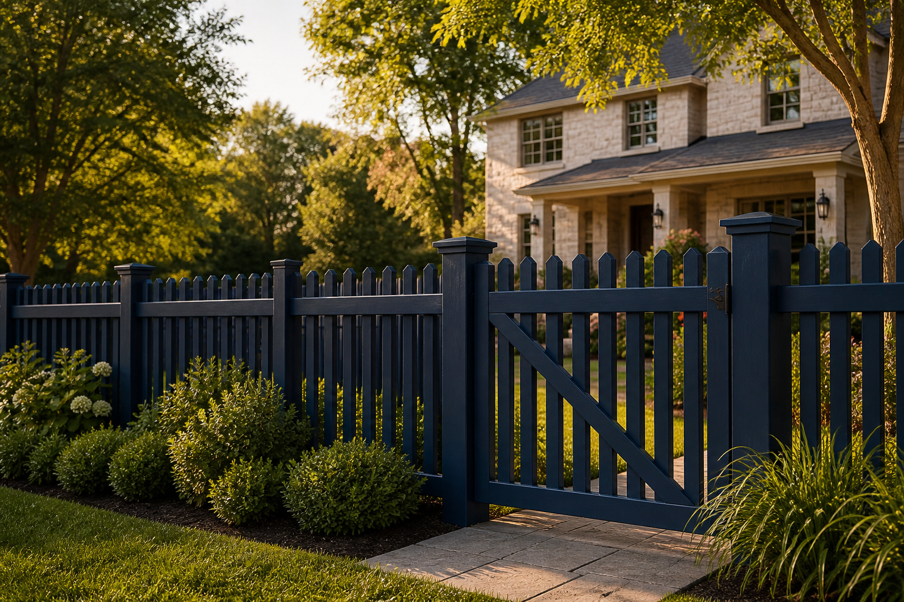

Residential Fencing
Privacy, decorative, pool, and garden fencing designed around your home.
Get an estimate →PROUDLY SERVING PENNSYLVANIA
Professional fence installation, repair, and maintenance for homes and businesses. Quality craftsmanship you can trust.

WHAT WE BUILD
From design to installation, we provide tailored fencing solutions for your property, priorities, and budget.
Privacy, decorative, pool, and garden fencing designed around your home.
Get an estimate →Security and boundary solutions for offices, retail, and industrial properties.
Get an estimate →Post replacement, panel repair, gate adjustments, and storm-damage restoration.
Get an estimate →Warm, timeless cedar and pressure-treated styles built for Pennsylvania weather.
Get an estimate →Low-maintenance materials with clean lines, lasting strength, and curb appeal.
Get an estimate →Tell us what matters most—privacy, security, safety, or style. We’ll guide you to the right fence.
Talk with a fence pro →WHY PENNSYLVANIA FENCE PROS
Careful planning, quality materials, and professional installation from first post to final walkthrough.
Every post, panel, and gate is installed with attention to alignment, strength, and finish.
Honest recommendations, straightforward estimates, and updates throughout your project.
Materials and installation methods selected to stand up to local seasons and soil conditions.
WHAT CUSTOMERS SAY
Pittsburgh Fence Company did an amazing job on our backyard privacy fence. Professional, on-time, and fair pricing. Highly recommend!
01Best fence contractors in Pittsburgh! They replaced our old chain link with beautiful vinyl fencing. Crew was respectful and cleaned up perfectly.
02Excellent service from quote to completion. They handled all permits and the installation was flawless. Our property looks fantastic!
03Commercial fence installation for our business was completed ahead of schedule. Very impressed with their professionalism and quality.
04They repaired our storm-damaged fence quickly and at a fair price. Great communication throughout the process. Will use again!
05Outstanding craftsmanship on our custom wood fence. The team was knowledgeable and helped us choose the perfect design for our home.
06SERVICE AREAS
Residential and commercial fencing solutions throughout the Commonwealth.
OUR PROCESS
A clear, professional process that keeps your project moving and your expectations aligned.
We listen, measure, check grade, and understand what your fence needs to accomplish.
We help select the material, height, style, layout, and gates that fit your goals.
Our crew installs cleanly, communicates clearly, and completes a final walkthrough.
BUILT STRONG. BUILT RIGHT. BUILT TO LAST.
Request a free, no-obligation fencing estimate today.